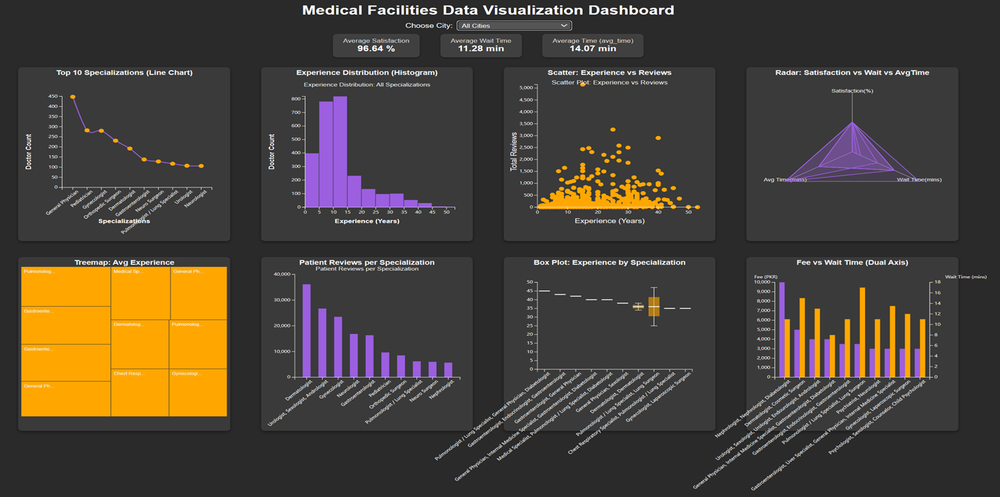

Medical Facilities Data Visualization Dashboard

1. Project Overview
This dashboard analyzes a dataset of medical facilities and provides insights into key performance indicators and trends.
2. Dataset
File: facilities_data.csv
Description: The dataset includes information on doctors' experience, specialization, patient satisfaction, wait time, average time to patients, fees, and reviews.
3. Features Implemented
Dynamic Filtering: A city filter allows users to explore data specific to a selected city or all cities.
Display average metrics for:
- Patient Satisfaction
- Wait Time
- Avg Time to Patients
Interactive Charts:
- Line Chart: Top 10 specializations by doctor count.
- Histogram: Distribution of doctors' experience.
- Treemap: Average experience per specialization.
- Waterfall Chart: Patient reviews per specialization.
- Scatter Plot: Relationship between doctors' experience and total reviews.
- Box Plot: Experience distribution for top specializations.
- Radar Chart: Comparison of satisfaction rate, wait time, and avg time across top specializations.
- Grouped Bar Chart (Dual Axis): Comparison of average consultation fees and wait times.
Tooltips and Interactivity:
- Hovering on chart elements reveals specific details.
- Clicking on line chart points filters the histogram.
4. Technologies Used
HTML5
CSS3
JavaScript (ES6)
D3.js v7
5. User Experience
Interactive Interface: Users can interact with visualizations to gain insights.
Clear Visual Representation: Charts are designed to ensure clarity and accessibility for users.
Insights: The dashboard helps identify trends such as:
- Most common medical specializations.
- Distribution of doctors' experience.
- Specializations with high patient reviews and satisfaction.
6. Visualization Contributions
- Line Chart: Visualizes the Top 10 medical specializations by number of doctors.
- Histogram: Displays the distribution of years of experience across doctors.
- Treemap: Displays average experience of doctors per specialization, with area size reflecting experience.
- Waterfall Chart: Visualizes patient reviews per specialization, showing a clear comparison of review counts.
- Grouped Bar Chart (Dual Axis): Compares average consultation fees (left axis) and wait times (right axis) for top specializations.
- Box Plot: Shows the distribution of years of experience across top specializations (min, Q1, median, Q3, and max).
- Scatter Plot: Correlates years of experience with total patient reviews, identifying patterns between experience and review counts.
- Radar Chart: Compares patient satisfaction rate, wait time, and average consultation time across top medical specializations.
7. Key Insights
The dashboard allows users to:
- Identify the most common medical specializations.
- Analyze the experience distribution of doctors.
- Compare patient reviews and satisfaction rates by specialization.
- Observe correlations between doctors' experience and patient feedback.
- Evaluate waiting times and consultation fees to locate high-performing medical facilities.
Key Achievements:
- Successful integration of eight interactive charts using D3.js v7.
- Dynamic city-based filtering and KPIs.
- Consistent design, interactivity, and performance testing.
💾 Download Full Business Report